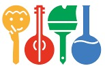
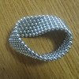
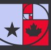
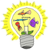

(As of 2023, I'm no longer very active in education, although I still teach for the Polish Children's Fund roughly once a year - usually math + movement / impro classes. Here you can find some initiatives I was involved in in the past. My interests have shifted towards movement, dance, body work etc.)
Over the years I've been involved in various initiatives in this field: Polish Children's Fund, Summer Scientific School (SSS), Mathcamp. I teach classes on university-level math and computer science topics, usually delivered in workshop style hands-on format.
I enjoy all events where you can meet interesting/nontrivial people - like Offtopicarium, an event I've co-organized.
 Polish Children's Fund (Krajowy Fundusz na rzecz Dzieci) is a Polish NGO that helps gifted children in all fields (math & science, arts, humanities) by organizing camps and workshops. I've been a tutor at many such workshops. Classes I've taught include: automata and formal languages, quantum computing, random walks and electrical networks, combinatorics of partitions, tilings and determinants.
 Summer Scientific School (Wakacyjne Warsztaty Wielodyscyplinarne) is an independent summer camp for exceptionally gifted high school kids that takes place annually in Poland. I've co-organized it since 2006. The camp features high density of brilliant people, challenging courses, open and informal atmosphere, tons of geeky/nerdy stuff. I've taught classes on: introduction to quantum mechanics, information theory, the probabilistic method, the polynomial method, communication complexity, metric embeddings. You can read more about it here.
 Canada/USA Mathcamp is a 5-week long summer camp for mathematically talented high school students that takes place each year in the US. At Mathcamp, students are exposed to university-level topics in a very intense atmosphere. I was a visitor in 2013, when I taught a class on communication complexity.
 Offtopicarium is an unconference-type event I co-organize - a meetup of interesting people: scientists, entrepreneurs, social activists etc. Features informal atmosphere and lots of interesting and passionate people. The idea proved successful enough to spawn "forks" e.g. Minerviad in Israel.